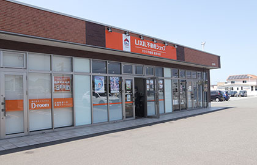
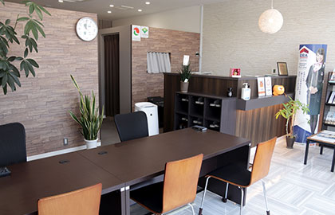
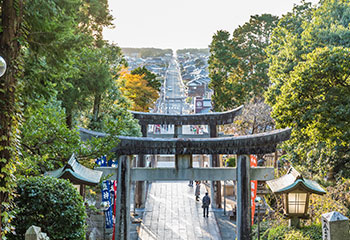

- トップ
- 会社概要
会社概要と代表あいさつ
ひかり不動産は福津市・宗像市に根付いた地域密着の不動産会社です。ひかり不動産代表からのごあいさつと、当社が持つ強み・特徴についてご紹介いたします。
会社概要
| 店舗名 | LIXIL不動産ショップ ひかり不動産福津本店 |
|---|---|
| 運営会社 | ひかり不動産株式会社 |
| 代表者氏名 | 市山 英義 |
| 業務内容 | 不動産の売買・管理・リフォーム・解体・インスペクション・相続問題対応 |
| 免許その他 | 福岡県知事(1)第19434号 |
| 加盟団体 | 全国宅地建物取引業保証協会／福岡県宅地建物取引業協会／全米リアルター協会 |
| 郵便番号 | 〒811-3209 |
| 住所 | 福岡県福津市日蒔野５丁目4-3 T2-office Ｂ号 |
| 電話番号 | 0940-62-6671 |
| FAX番号 | 0940-62-6672 |
| 営業時間・営業日 | 9：00～18：00 |
| 定休日 | 土・日・祝 ※事前の予約で定休日も対応いたします。 |
| 交通 | 鹿児島本線 福間駅 徒歩15分 |
| 駐車場 | 共用駐車場 4台分のスペースあり |


経営理念・代表挨拶
ひかり不動産は福津市・宗像市の地域密着した不動産会社です。私自身、不動産業界に身をおいて20年以上経ち、不動産のプロとして知識・経験には自信があります。また、地域密着企業として地域の相場やニーズはもちろん、地元企業と連携することでお客様の問題解決をサポートできると自負しております。
当社のモットーは「お客様ファースト」であることです。不動産とは面白いもので、利益度外視でお客様のために全力で動いた結果、巡り巡って自社の利益につながることが多々あります。そうした経験をたくさん積ませていただいたこともあり、お客様のお話をじっくり伺い、お客様の心に寄り添い、お客様の利益のために自分にできる最高のサービスを提供することが大切だと考えるようになりました。
ひかり不動産が活動拠点とする福津市・宗像市は郊外ではあるものの、活気に溢れた都市であると感じています。そのエネルギーは大都市である北九州や福岡にすら負けることはないと思います。当社としては、そんな魅力あふれる街である福津市・宗像市を、不動産業を通してさらに元気に活性化させたいと願っています。実際に当社ではビーチクリーン活動やビーチサッカーなどの地域貢献もさせていただいており、地域の方々からご好評いただいております。
「お客様が笑顔になり地域が元気になるために全力を尽くす」
ひかり不動産はこれからもお客様のことを想い、お客様の利益を追求し、地域の発展を願って不動産業を行っていきます。「福津・宗像・古賀の不動産」のことならぜひ当社にお任せください。
当社の強み
地域密着！福津・宗像・古賀の不動産プロ！

ひかり不動産は福津・宗像・古賀を中心に地域に密着する不動産会社です。地域の不動産情報に長け業界歴20年の経験・実績を持つ代表が直接お客様に対応し、不動産に関するお悩みを解決いたします。
大手不動産会社のネットワークも最大限に活用します！
ひかり不動産はLIXIL不動産ショップ加盟店として業界大手のバリューとネットワークを活かすことが可能です・グローバル展開するERAネットワークの活用、LIXILを通じて最大30社の不動産ポータルへの即時掲載、専門家による掲載物件の反響データ分析、質の高いリフォーム対応、解体など幅広く対応することができます。
各種士業と連携し、ワンストップのサービスを提供可能！
地元の各種士業（税理士・司法書士・行政書士・土地家屋調査士・弁護士・社会保険労務士）と強く連携して法律問題や法手続きに関しても当社が窓口となりワンストップで対応できるのが強みです。中でも、当社は「福岡県古賀市の司法書士松本事務所」と提携することで不動産相続問題への対応力が高いと評判です。他にも、ホームインスペクションや解体についてもリーズナブルに対応可能で、不動産売却に関することでしたら、プロフェッショナルとしてどんなことでもお任せいただけることが当社の魅力であり強みです。
まずはお客様の利益を生む事から
誠心誠意働いて、お客様に利益をもたらせばそれは自然と自分に返ってくるはずです。一旦は自社の利益を忘れ、ひかり不動産に来ていただいたお客様に満足していただければと思っております。弊社はノルマの無い会社です。数字に追われて、無理な営業をかける事もございません。双方が幸せになれるように精一杯担当させていただきます。
不動産売却はもちろん、離婚・相続・ローン問題・投資物件・リフォームなど不動産に関することならどんなことでも当社にご相談ください。「福津・宗像・古賀の不動産のプロ」として当社ならではの強みを活かし、お客様の利益実現のために全力を尽くします。
ひかり不動産へのご相談はこちらから！ お客様のプライバシーにも配慮した 相談スペースもご用意しております。
お気軽にお問い合わせください。リンク指示
会社案内に関するその他ページは